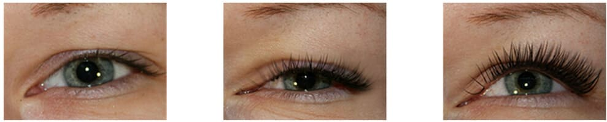

No es ningún secreto que los cánones modernos de la belleza dictan la moda de las pestañas largas y gruesas. Para coincidir, es importante cuidarlas correctamente y elegir un remedio efectivo y de alta calidad. Hoy el mercado cosmético está listo a proponer a todas que desean la novísima elaboración de los cosmetólogos europeos: el gel Celebrity Lashes.

El secreto principal del gel es su componente EMortal® Pep , es un complejo de péptidos naturales que no solo restauran y fortalecen los folículos pilosos, sino que también activan las células de los pelos, contribuyendo al aumento del número de pestañas. Según la investigación de los científicos, una parte de las pestañas está constantemente en el «estado de sueño». Una mujer promedia, tiene 40% de las pestañas en el párpado superior, y 15% en el inferior que nunca pasan a la etapa del crecimiento activo.
Los componentes activos de Celebrity Lashes no solo se encargan de la longitud y la salud de las pestañas existentes, sino que también despiertan los folículos pilosos dormidos de las pestañas. Como resultado de tal efecto complejo, es posible alcanzar el doble aumento visual de la densidad de las pestañas.
El resultado del uso del Celebrity Lashes de una de nuestras lectoras. Según la chica, el crecimiento notable ocurrió después de sólo 10 días desde el Inicio del uso del remedio; el resultado final es después del curso mensual.

Como señalan los especialistas, el efecto tangible de Celebrity Lashes está garantizado incluso con el uso irregular. Si siguen las instrucciones, el resultado será en unas semanas, dependiendo de las características individuales de las pestañas.
Según la encuesta, todas las chicas que compraron el remedio consiguieron alargar sus pestañas a unos pocos milímetros como mínimo. Hay que tener en cuenta que la novedad no es tóxica y no tiene contraindicaciones.
Por último, añadimos que en España la venta del remedio se realiza solamente a través del sitio web oficial de la empresa representante. ¡Cuidado con las falsificaciones! ¡Le deseamos una pestañas muy gruesas y largas!
Reseñas: 70
Lucía
Julia
Alba
Miss Besos
El resultado es realmente bueno. Y lo más importante que no hay efectos secundarios. Antes, usaba un remedio famoso: me comenzaron a hincharse los párpados.
Elena
Margarita
Anita
Verónica